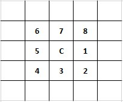

+
B.5 | JPDEM Saving Data to Files
Overview (B.5_JPDEM Saving Data to Files)
This document explains how to use JPDEM's file menu to save different types of data files and formats useful for various spatial analysis and visualization purposes.
JPDEM's File menu contains multiple "Save" items, each of which allows you to save a specific type of data to a file (or set of files):
| Save Item | Summary |
|---|---|
| Velma Simulator Fileset | Saves the current DEM, Flow Direction and Flow Accumulation data in 3 separate .asc files. |
| DEM Data | Saves the current DEM data -- file type options available. |
| Flow Direction Data | Saves the current Flow Directions ("fdir") data - file type options available. |
| Flow Accumulation Data | Saves the Flow Accumulation ("facc") data - file type options available. |
| Highlighted Cells | Saves the current set of highlighted cells into an .asc file. |
| Current Image | Saves JPDEM's current display as an image -- file type options available. Unique to this item: save the current image as a .gif, .jpg or .png file. |
| JPDEM State | Save's JPDEM's entire data state into a .csv file. Provided for JPDEM developers, and not generally useful to others. |
Many of the "Save" items also have sub-items that allow you to specify the format of the data file that is written:
| File Type Option | Description |
|---|---|
| Data Array | Writes data values to a .txt file, one value per line, tab-character suffixed.(This is a legacy format, now not commonly used.) |
| ASCII Grid | Writes data values to an .asc file with dimensions matching the currently-loaded DEM data grid. |
| Delineated ASCII Grid | As above, but data values for cells outside the current delineation are writtenas the ASCII Grid "nodata_value" (i.e. "-9999"). |
| Delineated ThresholdASCII Grid | As above, but data values for cells lying below the specified "Facc Threshold"value are written as the ASCII Grid "nodata_value" (i.e. "-9999"). |
| Image (.gif, .jpg, .png) | Only available for the "Save Current Image" menu item. |
Additional Details
Save VELMA Simulator Fileset
This item writes three separate .asc files for DEM, fdir, and facc data. The files all share the same name,
but have the prefixes "DEM_", "FDIR_" and "FACC_" prepended when they are written.
Note that although the item name declares this as a "VELMA" fileset, currently the facc values written are JPDEMvalues, not VELMA values (see the comments in the section "Save Flow Accumulation Data" above for more on why thisdistinction is important).
Save DEM Data
Selecting this item allows you to write JPDEM's current DEM data to a file. The "current DEM data" means whateverJPDEM has currently loaded, in its current state. For example, if you click File -> "Load Map File Data" ->"Load as DEM File", and then immediately click File -> "Save DEM Data As" -> "ASCII Grid", the fil you savewill be a duplicate of the file you loaded (apart from any filename differences you introduce). However, if you loada DEM file, flat-process it, and then "Save DEM Data As", the files are likely to contain different data.
Save Flow Direction Data
When JPDEM flat-processes a map, it generates a flow-direction ("fdir") value for each cell in that map. Flowdirection data is also generated when the "Tools" -> "Determine Flow Data" item is run.
The flow direction value of a cell is a number between 1 and 8, uniquely identifying one of the cell's eight adjacentcells. A flow direction value <= 0 indicates that flow direction data has not been computed yet.
The directional values for cell "C" are show below:
So, for example, if C's fdir = 2, C's flow direction is to the cell below and to the right of it.
Flow direction indicates only the primary direction that water will flow from a cell to its adjacent cells. Water mayflow to adjacent cells in addition to the cell specified by the flow direction value.
Flow direction data may be saved as either an .asc grid file, or a delineated .asc grid file.
The delineated .asc grid file option reports the "nodata_value" (i.e. -9999) for any cell that is not part of thecurrent delineation. If no delineation has been performed yet, the entire .asc file will be nodata_value values.
Save Flow Accumulation Data
When JPDEM flat-processes a map, it generates a flow-accumulation ("facc") value for each cell in that
map. Flow direction data is also generated when the "Tools" -> "Determine Flow Data" item is run.
In JPDEM, the flow accumulation value of a cell is the number of "uphill" cells that flow into that cell. The term"flow into" means that a chain of fdir values leads from the uphill cell to the cell in question,
i.e. primary flow directly is the only consideration when calculating a cell's flow accumulation count.
Note that JPDEM and VELMA both contain flow accumulation data, but VELMA facc values differ from JPDEM's. While bothJPDEM and VELMA's facc values contain the notion of "cells whose primary flow direction leads to me", VELMA's faccvalue additionally include a scaling component based upon the
grid's cell size, and whether flow direction is across an edge or corner cell.
JPEM fdir values give a fair idea of the high-vs-low flow areas within a flat-processed DEM and watershed, but theycannot be used as VELMA facc data. VELMA computes its own facc values from the (JPDEM-produced)flat-processed DEM it is provided with at initialization.
Flow accumulation data may be saved as an .asc grid file, or a delineated .asc grid file.
The delineated .asc grid file option reports the "nodata_value" (i.e. -9999) for any cell outside the currentdelineation. If no delineation has been performed yet, the entire .asc file will be nodata_value values.
Flow accumulation data may also be saved as a delineated threshold .asc grid file: in this case, any cell that is notpart of the current delineation, OR is below the specified Facc Threshold value is set to the nodata_value. Again,if no delineation has been performed, or no Facc Threshold has been set, the entire .asc file will be nodata_valuevalues.
Save Highlighted Cells
When selected, this item writes an .asc file in which each cell has one of three possible values:
- Negative One (“-1”) indicates a cell that is not highlighted, and not part of the current delineation.
- Zero (“0”) indicates a cell that is not highlighted, but that is part of the current delineation.
- One (“1”) indicates a cell that is highlighted, regardless of whether it is part of the current delineation or not.
Save Current Image
The "current image" is whatever JPDEM is displaying when this item is selected/clicked. JPDEM willwrite the map image (not a screen capture of the entire JPDEM app window) to the file typespecified (.gif, .jpg, or .png).
Note: Use the Windows 10 Snipping Tool if you want a screen capture of the entire JPDEM window.
Save JPDEM State
Selecting this item writes JPDEM's current spatial data state to a comma-separated values (.csv)file. This function is provided for JPDEM developers. General users may find the contents difficultto interpret.